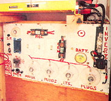

Happy On One Kilowatt
Harnessing the power of water in your backyard is a homesteader’s dream. Find out how one couple runs their home off of 1 kilowatt of hydroelectric power... and a steady stream from Mother Nature.
By Bill Isely
June/July 2000
What a disappointment we faced when we put the numbers together. While we undoubtedly could generate several kilowatts using the steepest run of our large creek, it would require at least 1,000 feet of 8" piping, plus custom-made generating machinery for high water flows. Such a system was well beyond our financial means.
But as time passed, we noticed that our monthly power bill rarely exceeded 750 kilowatt-hours That meant we needed an average generating capacity of only 1 kilowatt (24 hours a day X 30 days = 720 hours). even with an electric range, refrigerator, freezer. water pump, water heater and clothes dryer. We'd also overlooked a low-flow creek coning off our mountain that crops 360 feet after it crosses onto our property. We determined that it would easily generate more than a kilowatt. Hydropower was beginning to look more promising.
The trick was to figure out how- to handle the peak loads of our current-greedy appliances. We settled on a plan to install a small 1 l/ 2 kW DC Harris Hydroelectric system, with batteries and inverter, capable of producing 120 volts of AC, while leaving some of our 240V appliances - a range, a clothes dryer and the main water pump - hooked up to the grid. As backup in case the grid goes down, we've got a smaller 28V DC water pump, a hot plate and a toaster oven, all of which can be run off the hydro system. The clothes dryer is a luxury we can do without in a pinch.
For extra support, 1 1/2" galvanized steel pipe spans the main creek. Bill and a friend visit the source.
Going Hydro
The first step was to lay pipe down the mountain to check our calculations of pressure and flow - an arduous task, since the 360-foot drop brought us down some fairly steep and rocky terrain.
We knew we'd lose some pressure to friction, a result of the water running against the insides of the pipes (in general, the smaller the pipes, the greater the flow and the bigger the loss). We figured we could keep pressure loss to a minimum if we used 2" PVC pipe, but toward the top we switched to lighter, 1 1/2" PVC pipe to save on hauling labor. We also opted to use steel pipe for added strength where the system crosses the widest span of the main creek.
Rather than trying to blast through the rocky outcrops to bury the PVC pipes, we chose to lay them on the ground and depend on continuous water flow to prevent freezing. We planned to monitor the water temperature and, when things got too cold, to shut down the pipes until warmer weather returned. In our mild climate, we can usually count on hydropower for all but maybe a few weeks out of the year.
Next, we weighed various water pickup systems; whatever we chose would need to be capable of filtering out debris, eliminating air bubbles and removing sediment. This is probably the most critical component of the setup and certainly the one with the potential to cause the most trouble. Just to check on it requires a difficult climb.
We decided on a two-part system using a bucket and sediment tank. We placed the bucket under a low waterfall, covering it with a screen to filter out large debris; the strong flow clears the screen and keeps smaller sediment from settling on the bottom of the bucket, sending it along with the water, through a pipe, to a sediment tank located farther down the line.
(Admittedly, this type of system works best with a pristine stream like ours. Even so, for reliability, we installed a second water pickup point just below the bucket.)
For the sediment tank, we needed something large enough to allow silt to descend to the bottom and bubbles to rise to the top, leaving only clean water to exit at midlevel. Knowing that a vertical tank makes a better separator than a horizontal tank, we chose an oversized plastic garbage container.
We covered the outlet from the sediment tank to the hydro equipment with a fine mesh screen to prevent the passage of large particles that might clog the nozzle at the end of the pipeline. Air bubbles and turbulence move these particles to the surface of the tank, where they are drawn off along with surplus water. (The sediment tank doubles as an overflow, since much more water enters it than is needed for the hydro system. Average flow in the creek is 100 gallons a minute, while the maximum we use for the hydro system is 30 gallons per minute. Four overflow pipes lead from the top of the tank back to the stream.)
The system in place, we promptly conducted pressure and flow tests. Our measurements showed a static pressure (the pressure at the bottom of the pipeline when water is not flowing) of 155 pounds per square inch (psi). At a flow rate of 30 gallons per minute, we measured 140 psi, just right for a turbine using one nozzle, the lowest cost arrangement. While awaiting the arrival of our Harris turbo/alternator - a high-power version wound for a 24V to 28V output - we built a protective wooden shed for it beside the main creek, to allow easy dispos al of the wastewater.
One advantage of hydropower over solar - besides the 10:1 cost ratio - is that the battery bank need only be large enough to provide peak loads for starting motors, as well as to meet operating loads that exceed the alternator's capacity. (With solar, the batteries have to store power for nights and rainy days, while with hydro, you can count on continuous current production.) We started with six 12V RV batteries in series/parallel. They required excessive maintenance, however, so we switched to four 6V golf-cart batteries, still giving us 6 kilowatt-hours of storage capacity. (For more on batteries, see "The Almighty Battery," MEN, Feb/Mar 1999.)
In our type of hydro system, the alternator must continuously produce a full current (in our case 50 amps) even when we don't need it, in order to avoid wearing out the turbine. (When not being used to generate power, the turbine's speed actually doubles.) Thus, to avoid overcharging the batteries, we installed a regulator that continuously checks their voltage; when the batteries are fully charged, excess current is shunted to resistor loads. For the resistors we opted to use a bank of water heater elements, placing them with the batteries. That way, in cold weather, the excess power warms the batteries, increasing both their efficiency and life expectancy.
While awaiting delivery of the inverter that would convert our batteries' DC to 120V of AC, we turned to the problem of how to tie the hydropower to our house. We were able to fit a transfer switch box containing eight circuits in the wall adjacent to our existing circuit breaker box. The seven circuits we wanted to have energized, regardless of power source (grid or hydro), were moved into the transfer switch box. The water heater was then connected to the eighth circuit, though this meant modifying it to run on 120V rather than 240V. We replaced the existing water heater elements with lower wattage elements, so that the unit would draw no more than 550 watts. Even so, we can still run one warm washer load and enjoy two leisurely hot showers each day.
For convenience, we ran a special wire between the house and battery bank that allows us to remotely monitor the battery voltage. We've also got an AC meter that we can clamp onto the 120V hot wire where it enters the transfer switch box, to monitor the current being drawn.
Once the inverter arrived, we went about installing all of the control elements in a corner of our nearby greenhouse, along with the batteries. Because we wanted to be able to start motors and operate shop equipment, we needed at least a 2.5 kW inverter with good surge capacity. Cost being an important consideration, we bought an inexpensive modified sine-wave device.
Lessons Learned
Not long after going on the hydro system, we realized we'd made some crucial mistakes that would need addressing.
Belatedly, we discovered that batteries will off-gas hydrogen and that a simple cover and vent will not necessarily prevent nearby electrical equipment from sparking an explosion. We needed to move the batteries.
Second, we found that the modified sinewave inverter produced a power noticeably inferior to the pure sine-wave power we'd gotten used to from the grid. Many of the florescent lights we'd installed to reduce our power load would not start. The computer started crashing a lot and a VCR motor burned out in a way the repairman couldn't explain.
Worse still, a portable gauss meter revealed a very high level of electromagnetic field (EMF) radiation in the greenhouse where we'd installed the control equipment - most of it coining from the inverter. The level was high enough to make the greenhouse uninhabitable while the inverter was operating.
We returned the modified sine-wave inverter to the dealer and replaced it with a pure sine-wave device, which was twice as expensive but well worth the cost. It's now impossible to tell if we're operating on the grid or hydro without checking meters.
Even before the new inverter had arrived, we built a new shed for all of the control equipment, with a separate compartment for the batteries and water heating elements. We located the building in brush away from all normal foot traffic, to safeguard against the effects of any remaining EMF pollution. (Though the new sine-wave inverter runs clean, the battery regulator and battery cables emit a small amount of EMF radiation.)
We've now been using hydropower for more than a year and couldn't be happier. On only one occasion has the system shut itself down due to depleted batteries. We had been heating hot water all day, plus running other normal loads - refrigerator, freezer and toaster oven - as well as loads from two greenhouse heat-exhaust fans, which, controlled by thermostats, had kicked on automatically
We've since added a switch on the hot water heater, so that we can cut it off when we see the batteries becoming depleted. We've also wired this switch so that the toaster oven and the hot water heater cannot be run simultaneously.
If we were to do this project again, there is one other change we would make. When the refrigerator comes on, the lights momentarily dim, due to the marginal size of the wire spanning the 200-foot distance between the house and the inverter. This wire should be heavier, but changing it now would involve a lot of digging.
All in all, though, the project has worked out very well for us. We spent a total of $4,000, but are now saving $50 a month on power hills. And, with two electrical systems - whether our creek slows to a trickle or tile grid fails - our lights will stay on.
HYDRO SYSTEM DEALERS: Energy Outfitters, (541) 592-6903; www.energyoutfitters.com Real Goods, (800) 919-2400; www.realgoods.com (click on Renewable Energy Catalog at the top of the home page)
|
Flowing at a rate of 30 gallons per minute, our stream can generate up to 28 volts with our Harris turbo/alternator(left). |
Bill and his wife, Doris, at the turbo/alternator shed. Wastewater returns to the creek(center). |
A peek inside our single-nozzle turbine. |
|
To isolate minor EMF radiation given off by the battery cables, the Iselys built a separate shed. |
 A 2.5 kW pure sine-wave inverter converts DC power from four 6V golf-cart batteries to 120V AC. |
|
|
|
|
|
|
|
|
 |
|
|
|
|